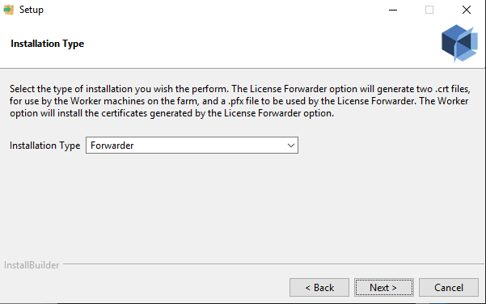
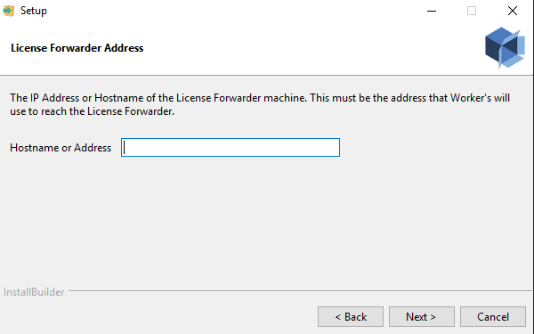
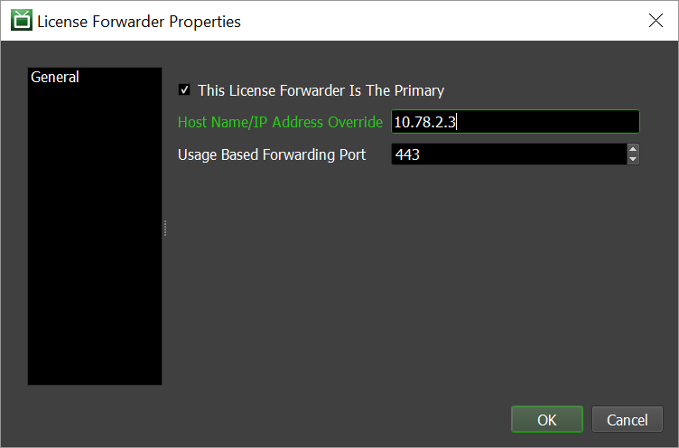
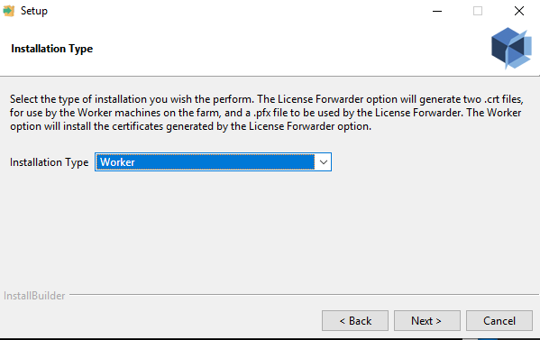
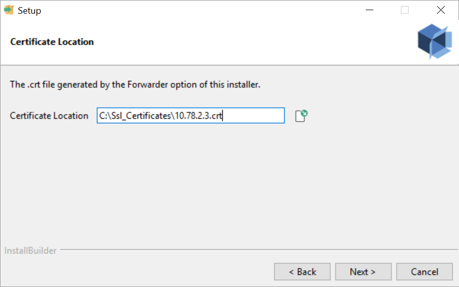

(Unsupported) Web Forwarding¶
Note
Topics covered in this page refer to legacy Thinkbox usage-based licensing (UBL), which is no longer available as of September 30, 2025. The UBL feature in Deadline 10 is now available through AWS Deadline Cloud UBL. For detailed setup instructions, please see the Deadline Cloud UBL Documentation.
For more details, please refer to the marketplace website.
When using Legacy Usage-Based Licensing, the Worker is responsible for checking out the credits it needs. It is not always desirable for the Worker to have internet access, which is why we have introduced the Web Forwarding functionality to the License Forwarder in Deadline 9.0.
When Web Forwarding is enabled, Workers using UBL or 3PL will send their credit requests to the License Forwarder.
Setup - License Forwarder¶
In order for Web Forwarding to work, you must first generate the Web Forwarding certificates using the Certificate Utility.
The Certificate Utility is included in the Client Installation.
On Windows and Linux, the Certificate Utility is in the bin/ directory of the Deadline Client installation.
On macOS it is located in the Resources/ directory of the Deadline Client installation. An example,
using Deadline’s default client installation locations for each operating system:
Windows:
C:\Program Files\Thinkbox\bin\CertificateInstaller-X.X.X.X-windows-installer.exeLinux:
/opt/Thinkbox/Deadline10/bin/CertificateInstaller-X.X.X.X-linux-installer.runmacOS:
/Applications/Thinkbox/Deadline10/Resources/CertificateInstaller-X.X.X.X-osx-installer.app
First you must run the utility on the machine that hosts the License Forwarder. You want to generate certificates, so run the utility in “Forwarder” mode.
You will be asked to provide an installation directory to store the 3 certificates that will be output by this mode. Make sure you pick a location that is writable. The next step will prompt you for an IP address or hostname. The utility will try to determine what that address should be, but you must make sure that the address found matches the address the Worker machines will actually use to reach the License Forwarder. Note that you do not need to actually run this utility on the License Forwarder machine itself, provided that you know what the License Forwarder machine’s reachable address is and enter it at this point.
Now the utility will continue with the generation of the certificates. Once it has completed, you should have two .crt files and one .pfx file stored in the location you specified during the installation. The two .crt files are need by the utility when running in Worker mode, so make sure these two files are located somewhere on your network where they can be reached by the Worker machines. One of the .crt files should be named after the IP address/hostname of the License Forwarder machine, and so should the .pfx file, so make sure you are manipulating the correct file. You must also move the .pfx file to the License Forwarder’s certificate folder. This must be done so that the License Forwarder will actually use the certificate you generated. If the License Forwarder is configured to use the same IP address/hostname that was specified when generating the file, it should look like this when run:

If there is a mismatch, the License Forwarder will look something like this when run:

The License Forwarder will attempt to find a .pfx file that matches what it thinks its IP address/hostname is. You can override the IP address/hostname of the License Forwarder from the Monitor if the address of the certificate is correct but the License Forwarder’s address is not. This setting is configurable by right clicking on the License Forwarder instance in the License Forwarder panel and selecting “Modify License Forwarder Properties…”:
Once the address matches for the License Forwarder and the .pfx, you’re ready to configure the Worker machines.
Setup - Workers¶
If you know how to install certificates manually then you can just install the two .crt certificates on all Worker machines as system root certificates and they’ll be ready for Web Forwarding. If you are not familiar with certificates, or simply would rather not do that yourself, fear not! The Certificate Utility also has a “Worker” mode which will perform the necessary steps for you (unless you’re using an operating system that is not recognized by the utility, at which point you will be required to install the certificates manually).
Run the Certificate Utility in “Worker” mode:
You will need to provide the path to the .crt file named after the License Forwarder (not the ca.crt):
Now the utility will install the required certificates on your machine. At this point, if the operating system is not recognized, you will see a pop-up explaining that you need to install the certificates manually. The supported operating systems for the utility are:
Windows
macOS
Debian
Red Hat
Ubuntu
CentOS
Fedora
Now you’re ready to start using the License Forwarder Web Forwarding! Simply enable the option in the Monitor from “Configure Repository Options -> Usage-Based Licensing”:

Linux Note: ForwarderCACertPath¶
If you have overloaded the “ForwarderCACertPath” entry in deadline.ini to use a different root certificate, you will need to manually update that certificate to contain the generated .crt certificate and the ca.crt. If an override is not specified for “ForwarderCACertPath”, Deadline will use the system ca-certificate root.

{kind=link}
{kind=link}
{kind=link}
{kind=link}
{kind=link}